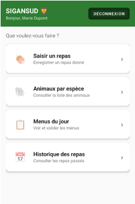

AP 5 · Gestion des repas du parc animalier · Symfony 7 + Android + API REST
Le projet SIGEANSUD consiste à développer un applicatif complet pour gérer les repas des animaux du parc animalier SIGEANSUD. L'objectif est de tracer tous les repas donnés aux animaux et de gérer les menus par espèce, avec deux interfaces distinctes : une application mobile pour les soignants et un back-office web pour les gestionnaires.
Réalisé en équipe de quatre (Mateo, Samuel, Clayton et Ewen) selon une approche Agile avec Trello, le projet a été déployé sur serveur distant IONOS.
Avec Matéo, j'ai développé l'application mobile Android destinée aux soignants du parc : saisie des repas, consultation des animaux par espèce, visualisation des menus du jour et historique des repas donnés.

Écran d'accueil de l'application Android : menu principal permettant au soignant de saisir un repas, consulter les animaux par espèce affectée, voir les menus du jour et accéder à l'historique des repas. Développé en Java avec Android Studio, connecté à l'API REST via MySQL IONOS.